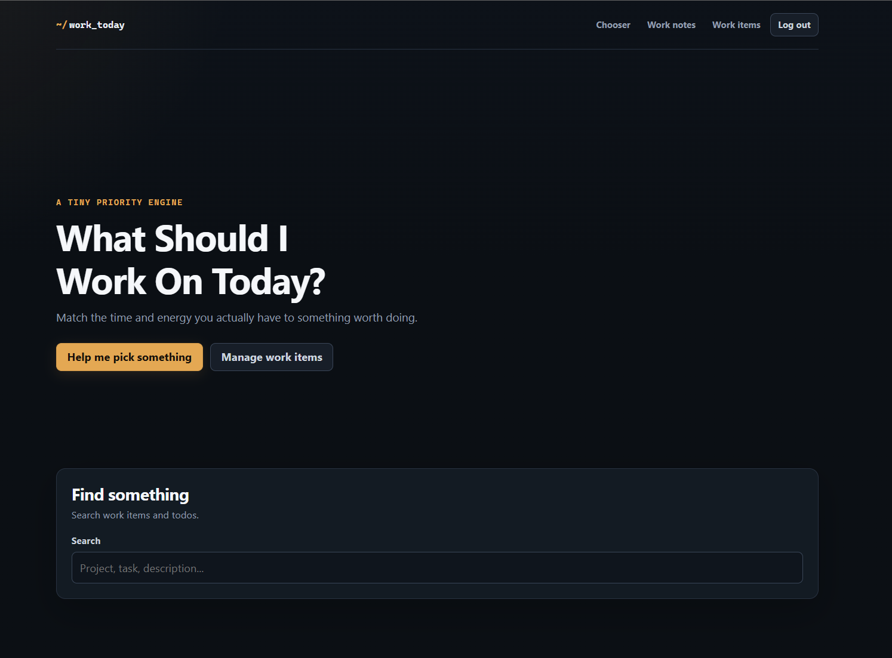
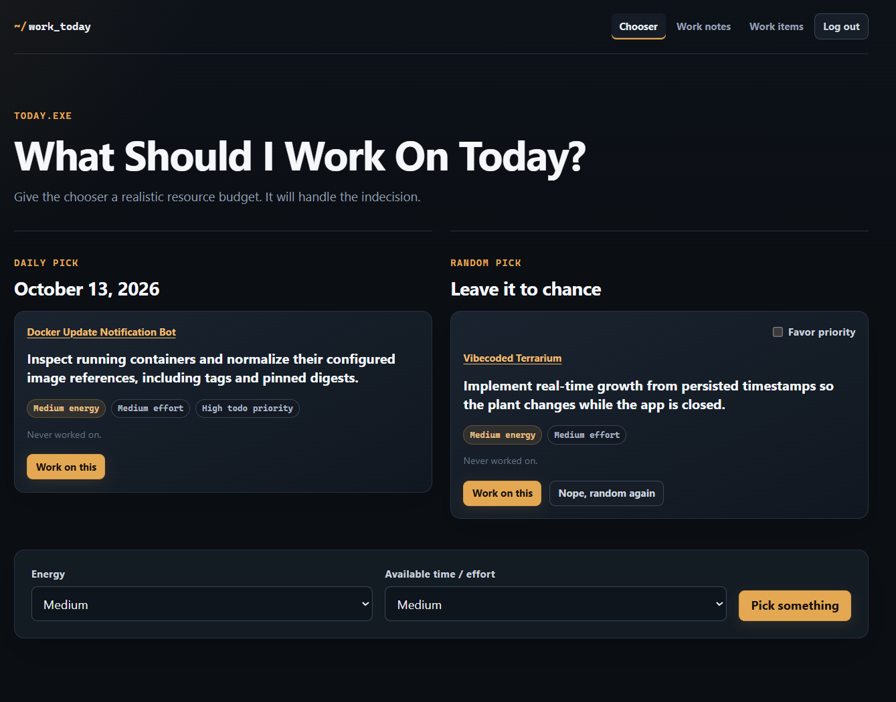

Neglect is useful signal
Recent work is already easy to remember. The chooser deliberately gives older work a path back into view.
projects/wsiwot
A small self-hosted priority engine for the problem I keep having: I have plenty of things I could work on, but the useful choice depends on how much time, energy, and attention I actually have right now.
.NET 10 · ASP.NET Core · Blazor · EF Core · SQLite · GitHub API · Docker
I originally built an earlier version of this years ago and found it genuinely useful. Eventually I went back to look at that code, decided I did not want to keep building on it, threw it away, and started over.
The basic problem had not changed: I have a lot of projects, maintenance work, experiments, and ideas competing for attention. When I finally have some time to work on something, I do not want to spend that time staring at a giant list trying to decide what deserves it.
The rewrite keeps the useful part of the original idea but makes the chooser more realistic. A task that is technically important is not a useful recommendation if I only have half an hour and enough energy for something small.

The app separates higher-level work items from concrete todos. A project, maintenance area, learning goal, idea, or external issue can stay around for a long time while the actual next actions change underneath it.
Todos carry their own energy, effort, and priority. The first version did not have the energy-and-effort model; I added it during the rewrite and kept it because it maps well to how I actually choose work.
"What is important?" and "what can I realistically do right now?" are separate questions. The chooser uses both.
The filtered chooser starts with incomplete todos on active work items that fit the selected energy and effort limits. It then ranks them using how long the parent work item has been neglected, plus a small priority bias and some randomness.
Neglect matters because otherwise the same visible or recently touched projects tend to keep winning. Old work should have a way to resurface before it disappears from my brain completely.
There is also a separate random pick when I want to stop optimizing and just let chance decide. Priority weighting can be enabled for that mode, but no eligible todo is made impossible to pick.

Completing work updates the parent work item's last-worked timestamp and records a history entry. I can also record general work with a note even when no specific todo was completed.
That history is not just a journal. It feeds back into the chooser. A work item that has been sitting untouched for a long time becomes more likely to surface, while something I worked on yesterday does not need to dominate the list just because it is fresh in my head.
The goal is not to build a mathematically perfect task optimizer. It is to stop useful old work from quietly disappearing.
The GitHub sync is one of the most important parts of how I use WSIWOT now. I wanted ChatGPT to be able to interact with the planner through tools I already had available. A direct MCP-style integration was not convenient for this setup, so I used a private GitHub repository instead.
SQLite remains authoritative. A background worker publishes a sanitized planning snapshot to the private sync repository, while tools can submit tightly constrained command files such as "create todo", "complete todo", or "set priority".
The worker validates those commands, applies accepted changes to the real database, writes an applied or rejected receipt, and then refreshes the snapshot. The Git repository is a mailbox and state mirror, not a second database.
In practice, this is now the main way I interact with WSIWOT: I can ask ChatGPT what is in the planner, create or reprioritize work, and mark things complete without giving an assistant direct database access.
Recent work is already easy to remember. The chooser deliberately gives older work a path back into view.
High priority improves a todo's chances, but it does not completely erase energy, effort, neglect, or randomness from the decision.
GitHub sync mirrors useful state and carries requested mutations; it does not turn repository JSON into a competing source of truth.
The sync protocol exposes specific commands rather than arbitrary database access, making automation useful without making it unlimited.
WSIWOT also exposes an authenticated API for reading planning state, creating work items and todos, importing data, and asking for daily or random picks. The deterministic daily pick uses the current date and item identities instead of normal random jitter, so an unchanged planner produces a repeatable recommendation for that day.
WSIWOT is an actively used single-user tool rather than a general-purpose project-management product. It exists to make my own pile of projects easier to navigate, and the GitHub bridge has turned it into something I can interact with naturally from ChatGPT as well as from its own UI.